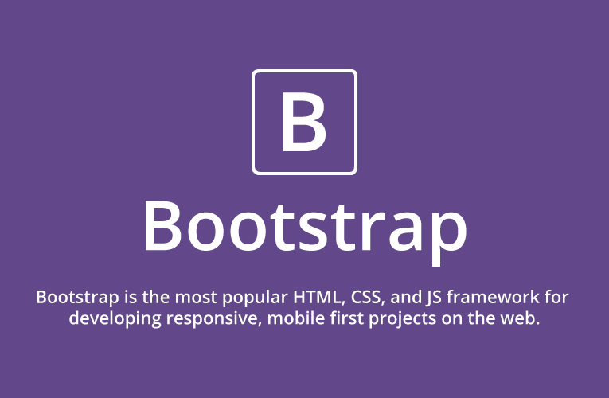

My personal page - part II
Reason to join the Web Development course? Fun to learn how to program and better understand my computer;-)

It took a while before I understood what Bootstrap actually does, but I think - hope - that now I understand
If it wouldn't have been for my brother - my instant hotline - I very much doubt if I would have figured it/all out
Also reason to join the course is to do something completely different besides work - which seems so easy compared to this course!
In addition to being a lawyer I something participate as deputy-judge in public law cases, they introduced their digital system KEI system last week!
In my work I do a lot for the industry - here is a picture of one of NL's largest industrial sites!
Besides work I like to spend as much time on friends of course, but also on hobbies. No. 1 activity: sports

And when I have more time off we like to travel the world, at Christmas we went to New-Zealand, now we are planning a trip to Taiwan

Also one of my great outdoor activities - dance, dance, dance!

Finally, if I'm not out of the house doing something, we come to the more boring stuff now, I like to cook
Or read...